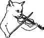

\1\2ğaç\3
Keman telleri neyden yapılır?

Keman telleri kedi bağırsağından yapılmaz, hiçbir zaman da yapılmamıştır.
Bu efsane Ortaçağ İtalyan keman ustalarının, enstrümanları için iyi tellerin koyun bağırsağından elde edildiğini keşfetmeleriyle başladı. Kedi öldürmek çok korkunç bir uğursuzluk getirdiğinden, icatlarını korumak için herkese telleri kedi bağırsağından yaptıklarını söylediler.
Efsaneye göre, Abruzzi Dağı’nın Pescara yakınındaki köyü Salle’de, Erasmo adında bir eyerci bir gün kuruyan koyun bağırsağının arasından esen rüzgarın sesini duymuş ve bunun Rönesans kemanı olarak bilinen eski bir keman türü için iyi bir tel olabileceğini düşünmüş.
Salle 600 yıl boyunca keman teli üretiminin merkezi haline geldi ve Erasmo tel yapanların koruyucu azizi olarak kutsandı.
1905 ve 1933’teki kötü depremler Salle içindeki endüstriyi sona erdirdiyse de dünyadaki lider tel üretici firmalarından ikisi –D’Addario ve Mari– hâlâ Salle’li ailelerce işletiliyor.
1750’ye kadar tüm kemanlarda koyun bağırsağından yapılmış telleri kullanıldı. Bağırsağın hayvandan henüz ılıkken çıkarılması ve yağ ve pislikten arındırılıp soğuk suya batırılması gerekir. En iyi kısımları şeritler halinde kesilir ve istenen kalınlıkta bir tel elde edilene kadar kıvırıp çekiştirilir.
Her ne kadar keman meraklılarının çoğu bağırsaktan yapılan telin en yumuşak sesi verdiğini düşünüyorsa da, günümüzde tel yapımında bağırsak, naylon ve çelik karışımı kullanılmaktadır.
Richard Wagner nefret ettiği Brahms’ın itibarını sarsmak için berbat bir dedikodu yaydı. Brahms’ın Çek besteci Antonin Dvorak’tan “Bohemlere özgü serçe katleden bir yayı” hediye olarak kabul ettiğini iddia etti. Sözde, Brahms bu yayla Viyana tarzı evinin penceresinden gelip geçen kedilere rasgele atışlar yapıyormuş.
Wagner şöyle devam etti: “Zavallı hayvanları vurduktan sonra aynı alabalık avlayan bir balıkçı edasıyla ipini sararak odasına çekiyormuş. Sonra da kurbanlarının son nefeslerini verirken inlemelerini şevkle dinleyerek ante mortem (ölüm öncesi) gözlemlerini defterine not ediyormuş.”
Wagner Brahms’ı hiç ziyaret etmedi ya da evini hiç görmedi; böylesi bir “serçe yayı”nın bırakın Dvorak tarafından hediye edilmesini, varolduğuna dair herhangi bir kayıt bile yok gibi görünüyor.
Kediler diğer tüm türler gibi sessizlik içinde ölmeye eğilimlidir.
Buna rağmen, bu kedi öldürme söylentileri Brahms’ın üzerine yapışmış ve bu iddia gerçekmiş gibi birçok biyografide tekrar edilmiştir.